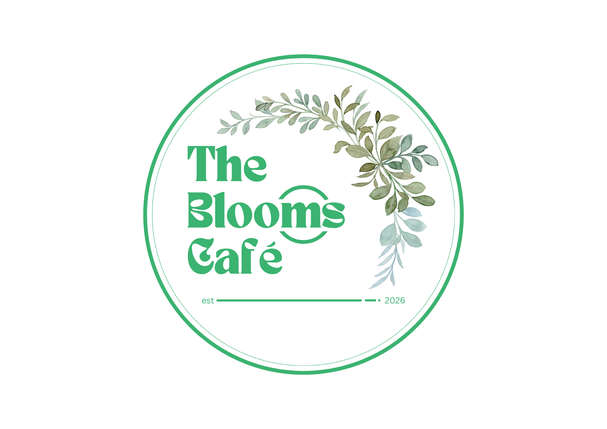
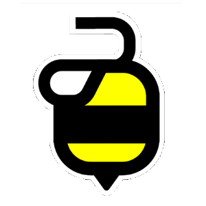
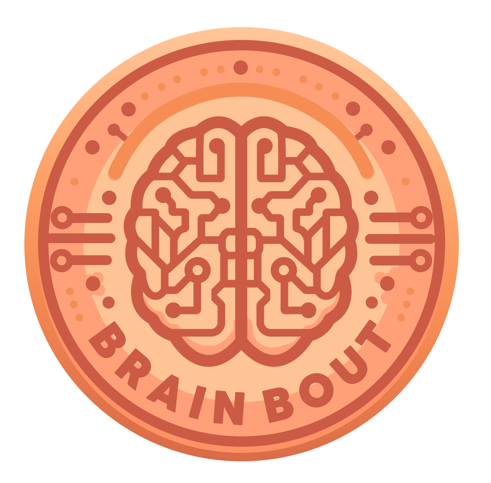
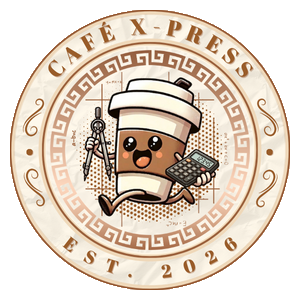

Graphic Design
Exploring the intersection of creativity, strategy, and visual communication. This is a growing collection — more projects will be added as I continue to create and refine my work.

Corel Draw
Vector Graphics & Design

Adobe Photoshop
Photo Editing & Design

Adobe Illustrator
Vector Art & Illustration

Canva
Graphic Design
I believe design is a language that bridges ideas and people. Every color, font, and shape tells a story and evokes a feeling. My goal is to create designs that communicate effectively, engage emotionally, and leave a lasting impression.
Clarity
Design should simplify, not complicate. Every element should serve a purpose.
Emotion
Design should connect on a human level. It should evoke feeling and create meaning.
Authenticity
Design should reflect genuine identity. It should be true to the brand's story.
Impact
Design should drive action. It should inspire, inform, and persuade.
Visual Hierarchy
Guiding the viewer's eye to what matters most through size, color, and placement.
Color Theory
Using color psychology to evoke specific emotions and create harmony.
Typography
Pairing fonts and using type to create hierarchy, mood, and readability.
Composition
Arranging elements to create balance, contrast, and visual appeal.
Brand Storytelling
Creating cohesive brand identities that tell a story across all touchpoints.
Research
Understanding the brand, audience, and goals. Identifying the problem to solve and the story to tell.
Sketch
Exploring ideas through rough sketches. Generating 10+ directions before refining the best concepts.
Refine
Choosing the strongest direction and refining it into a polished, pixel-perfect design.
Deliver
Presenting the design in context with mockups, brand guidelines, and a clear rationale.
Bloom Café is a concept project created to showcase my design capabilities. I may not have a large portfolio of real client work yet, but I am actively building my skills and adding new projects. More work will be added as I continue to create.

Logo Design & Brand Identity
I create distinctive logos that capture the essence of a brand. From concept development to final execution, I design visual identities that are memorable, versatile, and timeless. This logo features a botanical coffee cup icon with warm, earthy tones.

Print Production & Packaging
I design print-ready materials that maintain brand consistency across all touchpoints. From cup sleeves to packaging, I create cohesive visual experiences that enhance brand recognition. Every design is optimized for print production with attention to color accuracy and material compatibility.

Merchandise Design
I extend brand identities into merchandise that people love to wear and use. From tote bags to apparel, I create designs that turn customers into brand ambassadors. Each piece is designed to be both functional and visually appealing.

Customer Engagement Design
I design engaging customer touchpoints that build loyalty and encourage repeat business. From loyalty cards to membership materials, I create designs that reward customers and strengthen brand relationships. Every piece is crafted to delight and retain customers.


Vibee

Brainbout

Cafe Express
MUSIKA
This website was vibe coded with ChatGPT, Perplexity and DeepSeekAI
Inspired by Mauricio Juba's 2026 Portfolio